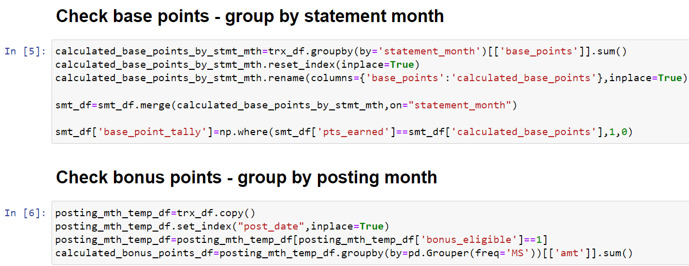

Summary
A semi-automated system which downloads and validates if the bank has awarded the correct rewards points for a given month.
Uses frameworks: Python, Selenium, pdf2image, OpenCV, Tesseract, SQL, Pandas
Downloader
The software logs in to the bank's web portal using user-provided ID and OTP. Using Selenium WebDriver to control a browser, the system easily navigates through the portal automtically using element IDs and XPATHs and trigger the necessary downloads. The downloads are subsequently renamed and placed in a folder for further processing.
Optical Character Recognition
The bank provides the monthly statement as an image embeded within a PDF. This makes it impossible for traditional PDF scanning packages to extract information. The implementation worked around this by using OCR. pdf2image is used to conver the pdf into an image, OpenCV is used to subseuqently crop out the table of interest and finally Tesseract performs the OCR on the cropped image.
On several occasion, the OCR reads Earned as Eamed, throwing the algorithm into error. A move to conditional Regex solved this problem.
Database
The interpreted data from the OCR and a CSV downloaded earlier are inserted into a database. Since the project will be small and not meant to be hosted, SQLite was chosen to be the database engine of choice.
Analysis
Pandas is used to extract the data from the database. Some cleaning is also performed before analysis are done predominantly using groupby() to sum and validate the calculations.
Summary
Finally the system gives a summary of the points that have been awarded over the months, as well as any months which do not tally with calculation.